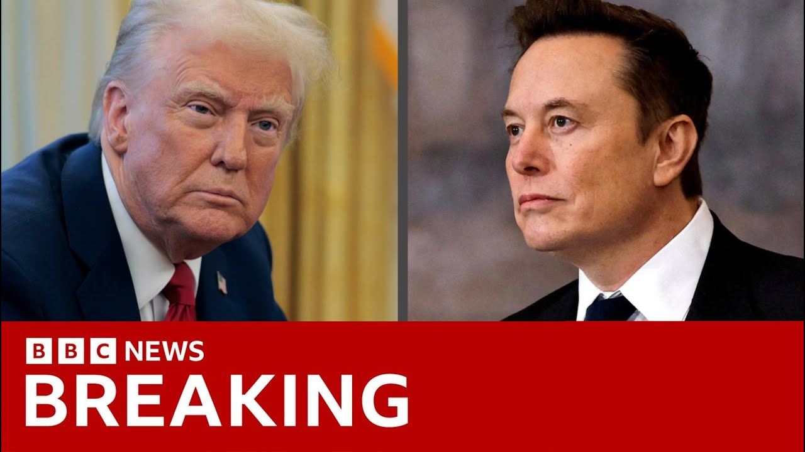

【特朗普与马斯克公开翻脸！亿万富豪指控总统名字出现在爱泼斯坦文件中 | BBC新闻】
Summary: A bitter public feud erupts between Donald Trump and Elon Musk, with Musk alleging Trump's name appears in Jeffrey Epstein's files and both exchanging sharp criticisms over policy and personal attacks, causing Tesla shares to plummet amid threats to cancel Musk's government contracts.
摘要： 特朗普与马斯克爆发激烈公开争执，马斯克指控特朗普名字出现在杰弗里·爱泼斯坦文件中，双方就政策和个人问题相互抨击，导致特斯拉股价暴跌，特朗普威胁取消马斯克的政府合同。

⏱️ Estimated Reading Time: 10 min
📚 高考3500生词 📚 雅思生词 📚 托福生词 📚 GRE生词 📚 UP主推荐生词
In the US, a formerly key political partnership is imploding in spectacular fashion tonight as a bitter war of words develops between Donald Trump and Elon Musk.
在美国，一场关键政治联盟正以戏剧性方式破裂，特朗普与马斯克展开激烈舌战。
During a press conference in the Oval Office, President Trump said he was surprised and disappointed at Mr. Musk's criticism of a key piece of his legislation.
特朗普总统在椭圆形办公室记者会上表示，对马斯克批评其核心立法感到震惊与失望。
Elon Musk responded on the social media platform X, which he owns, with a series of increasingly disparaging remarks about his former boss, calling him ungrateful, saying that his tariffs will cause a recession and alleging that he is named in the files of the late convicted sex offender Jeffrey Epstein.
马斯克在其拥有的社交平台X上连发贬损言论，称前老板忘恩负义，指其关税政策将引发衰退，并指控特朗普名字出现在已定罪性犯罪者爱泼斯坦的文件中。
Watching it all is Sarah Smith.
全程见证这一事件的萨拉·史密斯报道。
Give it to Elon as a presentation from our country.
把这当作我们国家给马斯克的赠礼。
Thank you.
谢谢。
Thank you, Elon.
谢谢你，马斯克。
A golden key to the White House was Elon Musk's leaving president.
马斯克曾是开启白宫之门的金钥匙。
Now, less than a week later, Donald Trump might want to think about changing the locks.
如今不到一周，特朗普或许该考虑换锁了。
Elon and I had a great relationship.
我和马斯克曾关系融洽。
Uh, I don't know if it will anymore.
现在恐怕难以为继。
I was surprised because today the German Chancellor Friedrich Merz was the Oval Office guest star, but Elon Musk and his criticism of Mr. Trump's spending bill dominated the conversation to the president's obvious irritation.
令我惊讶的是，尽管德国总理默茨是今日椭圆办公室主宾，但马斯克对支出法案的批评却成为焦点，明显惹恼总统。
But I'm very disappointed because Elon knew the inner workings of this bill better than almost anybody sitting here, better than you people.
但令我极度失望的是，马斯克比在座任何人都更了解该法案内情。
He knew everything about it.
他对其了如指掌。
He had no problem with it.
他原本毫无异议。
All of a sudden, he had a problem.
突然之间却横加指责。
Just minutes later, Elon Musk replied on X, saying, "False. This bill was never shown to me, even once, and was passed in the dead of night so fast almost no one in Congress could even read it."
几分钟后马斯克在X上反驳："谎言。该法案从未向我展示，且趁深夜快速通过，国会几乎无人来得及阅读。"
I swear that Where is he?
我发誓...他在哪？
Come on up here, Elon.
上来吧马斯克。
Mr. Musk obviously adored being in the spotlight as he campaigned alongside Donald Trump.
马斯克显然曾享受与特朗普同台竞选的高光时刻。
Today, he's claiming that without him and the more than $250 million he donated, the president would have lost the election.
如今他声称若非其2.5亿美元捐款，特朗普早已败选。
They were once seen together everywhere.
二人曾形影不离。
Now, their row is being conducted in plain sight on social media.
如今争执却在社交媒体公开上演。
Mr. Trump on Truth Social upped the ante with, "Elon was wearing thin.
特朗普在Truth Social加码指责："马斯克令人厌烦。
I asked him to leave.
我要求他离开。
I took away his EV mandate that forced everyone to buy electric cars that nobody else wanted, that he knew for months I was going to do.
我取消了他强推无人问津电动车的法令，他早知我会这么做。
And he just went crazy.
结果他彻底失控。"
Musk called that an obvious lie and then really escalated the abuse, suggesting Donald Trump has withheld files related to Jeffrey Epstein, who was arrested on charges of sex trafficking and died by suicide in jail because he's named in them.
马斯克斥其公然撒谎并升级攻击，暗示特朗普因自身出现在文件中而隐瞒爱泼斯坦案资料——该案涉性交易指控，爱泼斯坦狱中自杀。
Mr. Musk tweeted, "Claim to drop the really big bomb.
马斯克发推："要投下真正炸弹——
Donald Trump is in the Epstein files.
特朗普在爱泼斯坦文件里。
That's the real reason they've not been made public.
这才是文件未公开的真正原因。
Have a nice day, DJT.
祝愉快，DJT。"
Mr. Musk and his chainsaw were brought into government to aggressively cut government spending.
马斯克曾携"电锯"入阁大力削减政府开支。
A pointless exercise he thinks if President Trump will blow all the savings on tax cuts in his spending bill.
他认为若特朗普将节余资金全用于减税，则削减开支毫无意义。
You know, I was like disappointed to see the massive spending bill, frankly, uh which increases the budget deficit.
坦白说，我对这项扩大赤字的大规模支出法案深感失望。
not just decrease it and undermines the work that the Doge team is doing.
它不仅未缩减赤字，还破坏Doge团队的工作。
Which is that one?
这是哪一项？
Donald Trump is now suggesting the easiest way to save money would be to terminate Elon Musk's billions of dollars in government contracts and subsidies.
特朗普暗示最快捷的省钱方式就是终止马斯克数十亿美元的政府合同与补贴。
It was probably inevitable this bromance would turn sour, but no one expected it to go this bad this fast.
这段"兄弟情"破裂虽不可避免，但恶化速度之快仍出人意料。
We'll be speaking to Sarah in a moment, but first our business editor, Simon Jack, is here.
稍后将连线萨拉，先请商业编辑西蒙·杰克分析。
Simon, Elon Musk, known as the world's richest man.
西蒙，作为世界首富的马斯克...
Is he still?
现在还是吗？
He still is, but blime me, this has been an expensive foray into politics.
仍是，但天啊，这次政治涉足代价高昂。
I reckon Tesla shares are down 14% today, mainly on that comment about losing subsidies and contracts.
特斯拉股价今日跌14%，主因是补贴合同可能取消的言论。
That's the real killer here.
这才是致命打击。
It's not about the personalities, it's about the money.
无关个人恩怨，关乎真金白银。
So, I reckon Tesla shares have lost $140 billion worth today.
特斯拉市值今日蒸发1400亿美元。
He owns about a seventh of that.
他持有约七分之一股份。
say you're about 20 billion down just on the day.
意味着单日损失约200亿。
That would be enough to put him in the top 10 of richest people in the UK on his losses just today.
仅今日亏损就相当于英国前十富豪的财富总和。
I reckon since the the high point, the the romance, the bromance, the height of the bromance, Tesla shares are down some 40%.
自二人"蜜月期"高峰至今，特斯拉股价已跌约40%。
So that's probably cost him about 70 billion.
约损失700亿美元。
And don't forget big losses also potentially on SpaceX.
别忘了SpaceX也可能巨亏。
Now SpaceX shares aren't publicly traded, but the US has largely outsourced a lot of their satellite program to Elon Musk.
虽未上市，但美国已将大量卫星项目外包给马斯克。
That's worth hundreds of billions as well.
估值亦达数千亿。
350 billion.
3500亿。
He owns 42% of that.
他持股42%。
If that was a public traded stock, I think it would be down even more than Tesla.
若上市，跌幅或超特斯拉。
So, by my reckoning, since the height of their romance, he's lost over a hundred billion dollars.
据估算，自关系巅峰期他已损失超千亿。
There are only 14 people in the history of the world who've ever made that much money.
人类史上仅14人积累过如此财富。
So, as I say, one of the most expensive foray into politics of all time.
堪称史上最昂贵的政治涉足。
Huge figures there.
数字惊人。
Simon, thank you very much.
非常感谢西蒙。
Let's go back to Sarah Smith in Washington.
现在切回华盛顿的萨拉·史密斯。
And Sarah, this is all spectacular theater.
萨拉，这堪称精彩戏剧。
But what are the real world world consequences of this spat?
但实际影响究竟如何？
Yeah.
是的。
Well, this could be really important for the Trump administration, an administration that this time last week, Elon Musk was at the absolute heart of, and as he was leaving said he wanted to remain a close adviser to Donald Trump.
对特朗普政府影响重大——上周此刻马斯克还是核心人物，离任时自称愿继续担任顾问。
Now on social media, he's going so far as suggesting that Donald Trump ought to be impeached and replaced with the vice president, JD Vance.
如今却在社媒提议弹劾特朗普，由副总统万斯接任。
I mean, it's such a quick turnaround and it could really matter also because obviously Elon Musk has a very loud voice.
态度急转且影响深远，毕竟马斯克话语权巨大。
He owns his own social media platform X, so he can make his views and his criticism very much heard.
他拥有X平台，可放大批评声量。
But also, he has that enormous checkbook, albeit he's lost a lot of money today.
尽管今日亏损，他仍有雄厚资金。
He still has a lot that he could spend.
可支配资金依旧庞大。
He had promised $100 million to be spent on political groups that are controlled by Donald Trump.
曾承诺向特朗普掌控的政治团体捐款1亿。
Will that money now um turn up?
如今这笔钱会兑现吗？
That seems quite unlikely.
可能性极低。
he might be more likely to target that at representatives and senators who say for instance vote for this great big spending bill.
他更可能将资金转向反对该支出法案的议员。
He could then use his cash uh to target them to try and get them replaced by other candidates.
或资助候选人取代他们。
That's something that representatives do genuinely worry about and Elon Musk has a big enough checkbook to make that a real threat.
这令议员们切实担忧——马斯克确有财力构成威胁。
So he can use his money to continue to try to influence policy.
他仍能通过资金影响政策。
And then today h on social media among all the other things he's been saying he's even suggested that he might start his own political party which he could afford to finance.
今日他更在社媒提议自建政党——完全有财力运作。
So far he's had almost two million responses to that with over 80% of them encouraging him to set up his own party.
该提议已获200万回复，超80%表示支持。
Sarah, thank you very much.
非常感谢萨拉。
Sarah Smith there.
萨拉·史密斯报道。